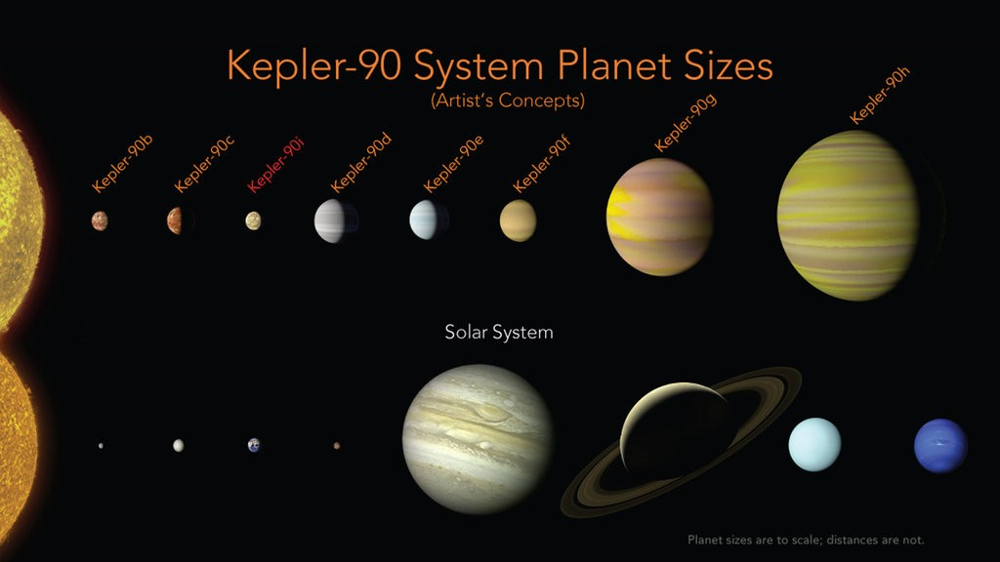

Astronomers used AI to look through years of data collected by the Kepler telescope to identify a distant eight planet solar system

Google's Deepmind AI
Google's deepmind AI called AlphaGo beat the best player in the game of GO in may of 2017. A few months later google developed a new version of AlphaGO:Alphago Zero. It achieved a superhuman level of playing performance. It was able to beat the original Alphago AI.
Carnegit Mellons AI
Carnegies computer
science department developed an AI that beat professional poker players. It beat them in the most difficult style of poker: ni limit Texas Hold'em. It is an impressive breakthrough because unlike GO the AI must make decisions without having all the information shown
Facebook's chat bots Alice and Bob
Facebook's self taught chatbots were shut down due to them creating their own language, The media would take it way farther than it needed it. As it turns out Facebook researchers shut down the AI bots since their goal was to create entities that will hopefully interact with people.
Even though AI has made huge leaps. It stills has a long way to go.